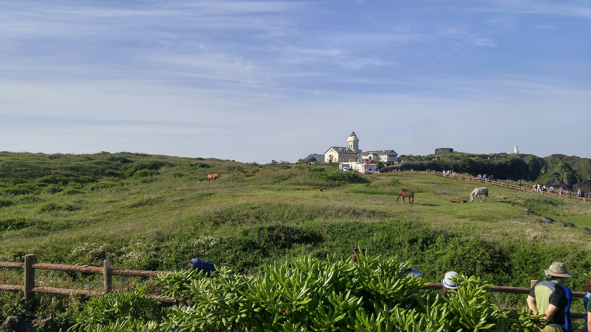

섭지코지란 제주 방언으로 '좁은 땅'이라는 뜻의 '섭지'와 '곶'이라는 뜻의
'코지'가 합쳐져서 섭지코지라는 이름이 만들어졌다.
섭지코지를 돌아보는데 걸리는 시간은 1시간 30분 정도 걸리면 가는 길 중간에 승마체험,올인 하우스, 등대, 선녀바위등이 있다.
등대에 올라가면 섭코섭지의 해안풍경을 볼 수 있다.
승마체험을 하면서 사진 한장 찍고 등대에 올라가서 해안풍경으로하여 사진찍고 연인끼리 오시면
LOVE벤치에서 선녀바위를 풍경으로하여 사진을
찍으면 좋다.